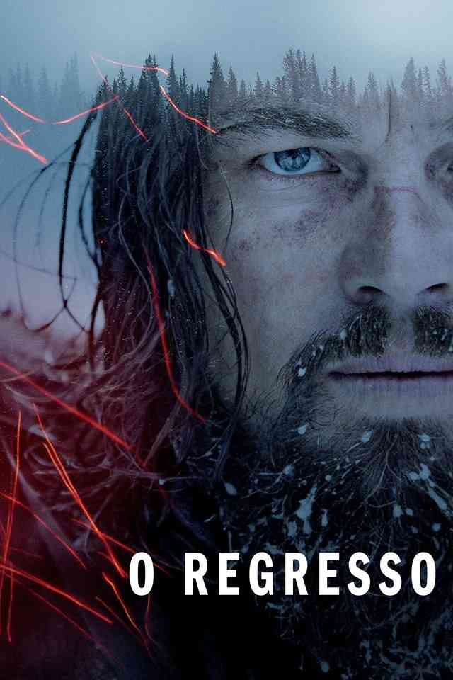

O Regresso
Após ser atacado por um urso, o caçador Hugh Glass é abandonado na floresta por seu companheiro John Fitzgerald. Apesar de muito ferido, Glass consegue sobreviver e vai em busca de vingança.
- Gênero: Aventura
- Ano: 2016

KBest ©
Após ser atacado por um urso, o caçador Hugh Glass é abandonado na floresta por seu companheiro John Fitzgerald. Apesar de muito ferido, Glass consegue sobreviver e vai em busca de vingança.